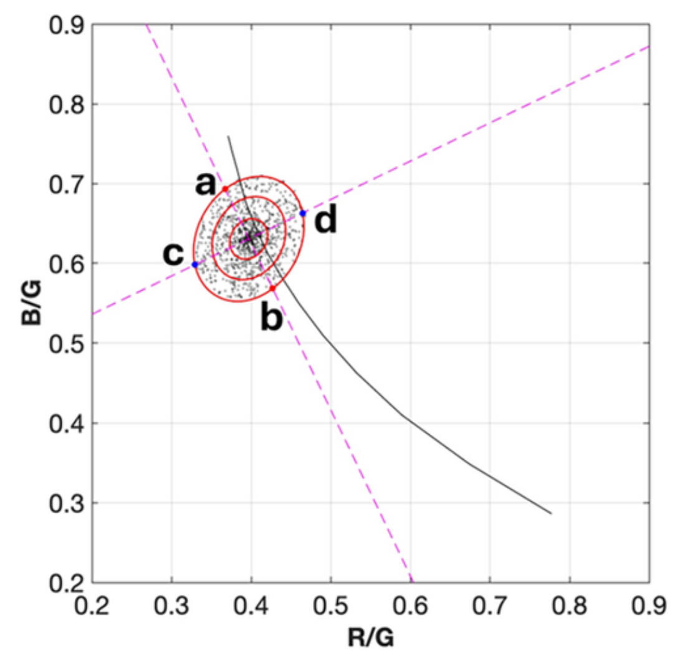
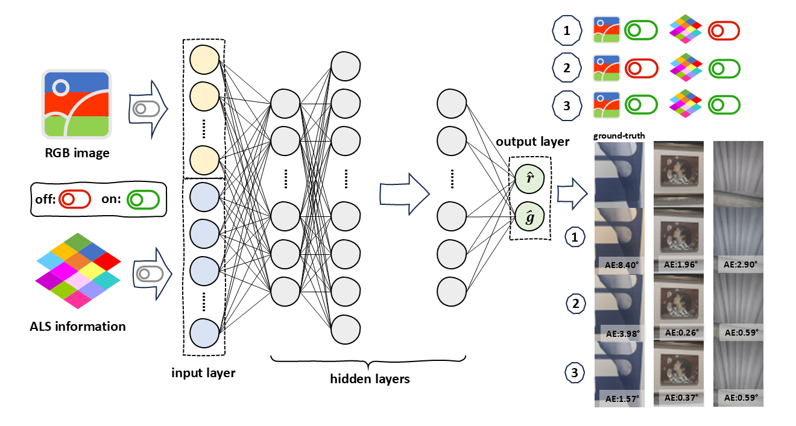
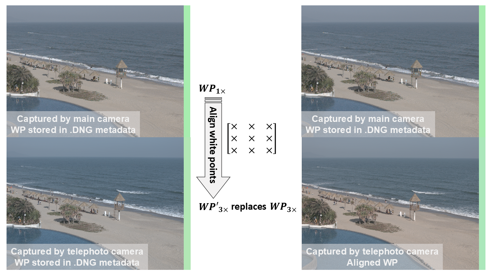

2022—2026
Ph.D., The Hong Kong Polytechnic University
Hong Kong · Supervisor: Prof. Minchen Wei
Imaging · Colour · Visual Perception
Ph.D. Candidate in Imaging and Colour Science
A multidisciplinary researcher working across colour consistency, colour constancy, spectral reproduction, and tone mapping.
01
I am a Ph.D. candidate at The Hong Kong Polytechnic University, advised by Prof. Minchen Wei. My research focuses on imaging and colour science, particularly colour consistency, colour constancy, spectral power distribution reproduction, and tone mapping.
Before joining PolyU, I completed my master's degree at Tongji University under the supervision of Prof. Peng Xu. My academic journey began in HVAC engineering and later expanded into imaging and colour science. This multidisciplinary background shapes how I approach problems across physical systems, image processing, and visual perception.
02
2022—2026
Hong Kong · Supervisor: Prof. Minchen Wei
2019—2022
Shanghai, China · Supervisor: Prof. Peng Xu
03
04

Journal Article · 2026
Color Research & Application
Examines the limitations of angular error for evaluating white balance and its relationship with perceived image colour appearance.

Conference Article + Code · 2025
33rd Color and Imaging Conference Final Program and Proceedings, CIC 2025
This work integrates RGB images with ambient light sensor (ALS) signals to improve practical illuminant estimation for colour constancy without significantly increasing computational cost.
